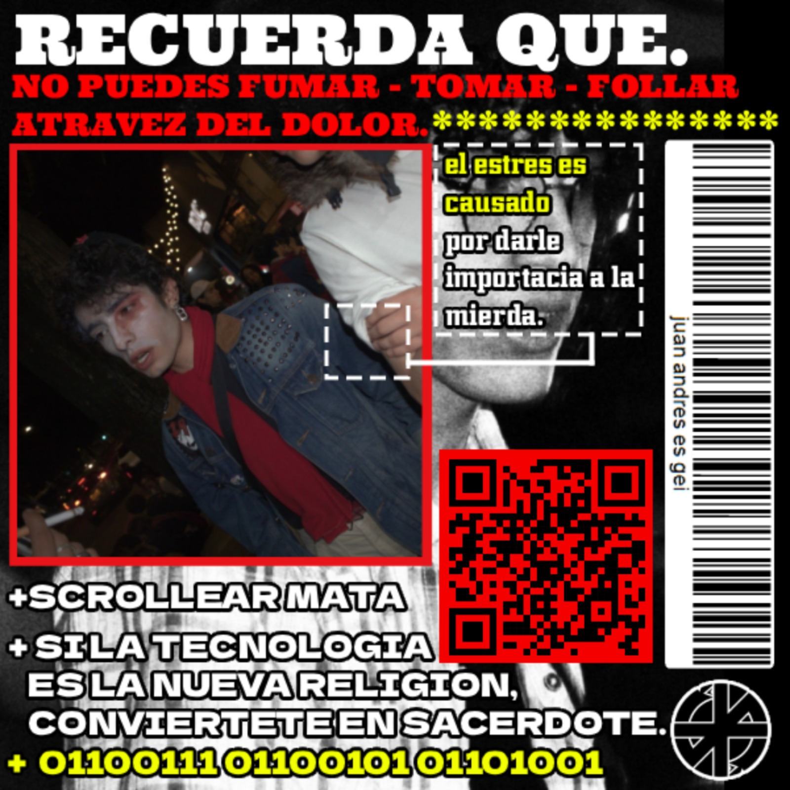

★ ALERTA: ¡YA SALIÓ VISTAZO #1! ★ Lee las historias ★ Mira las fotos ★ Dale play al sonido ★
Bienvenidos a Vistazo, una revista literaria que busca recopilar arte y expresión.
✦ FU-FURIA ✦

Mauro Marquez cumplía 41 años de edad, y otra vez se había levantado tarde para ir a trabajar. Detestaba las mañanas porque sabía que el tener que arreglarse significaba ver su autodespreciado rostro en el espejo. Entró al baño evadiendo su reflejo a toda costa, se lavaba el cuerpo frenéticamente, era un hombre asquiento al cual la más mínima suciedad le causaba repugnancia.
Salió del baño de la misma manera en la que entró y antes de vestirse admiro su abrigo favorito, un abrigo de lana café que le quedaba quizás unas 3 tallas mas grande, le pertenecía a su padre cuando este aún vivía. De su padre Mauro heredó muchas cosas tanto buenas como malas, entre ellas; la calvicie, lo ansioso, mucha de su ropa y el amor por el cafe.
Mientras se preparaba un tinto cargado recordó que había olvidado enviarle a su jefe uno de los 6 informes que éste le había pedido - Gritó. “V-vida Hijuepu-puta” Siendo tartamudo y lengüisopa a Mauro le costaba mucho expresarse verbalmente, estos rasgos se presentaban más a menudo cuando Marquez estaba ansioso o estresado y para él era eso la mayor parte del tiempo.
Para rematar la crisis en la que se encontraba Mauro, su mirada tuvo la desgracia de cruzarse por el reloj que llevaba puesto, si ni siquiera estaba al tanto de la fecha su cumpleaños mucho menos iba a estarlo de la hora que era y casi entra en llanto al darse cuenta que su jornada de trabajo había empezado hace 2 horas y el no habia ni servido su cafe. Sabiendo aun que ya iba brutalmente tarde a trabajar este decidió tomar su tinto con mucha calma y delicadeza, se apenaba mas y mas con cada sorbo que tomaba sabiendo él que estaba poniendo su trabajo en riesgo.
Mientras caminaba ansiosamente a la parada de bus pensó en lo útil que podría serle un cuerpo más atlético y menos panzón, o por lo menos un cuerpo que sí sea capaz de correr, jadeaba con cada paso que tomaba y un trayecto que a una persona normal le tomaría quizás 10 minutos a el le tomaba más del doble, Mauro siempre había sido algo gordo desde niño, razón por la que fue ferozmente matoneado en su niñez y juventud, cosa que no aportaba mucho a su ya bajo autoestima.